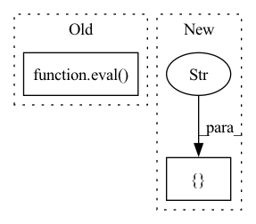

Pattern ID :37291
Before Change
for layer_name in layer_list:
layer_path_str = re.sub("\.(\d+)\.", r"[\1].", layer_name)
// TODO validation check
model_layer = eval( f"model.{layer_path_str}") // nosec
layer_class_name = str(model_layer.__class__).split(".")[-1].split(""")[0]
if hasattr(sys.modules[__name__], layer_class_name):
layer: ModelLayer = getattr(sys.modules[__name__], layer_class_name)After Change
if hasattr(sys.modules[__name__], layer_class_name):
layer: ModelLayer = getattr(sys.modules[__name__], layer_class_name)
layer_mapping[layer_name] = layer.parse_layer_obj(model_layer)
elif layer_class_name in [ "Sequential", "Bottleneck" , "ResNet"In pattern: SUPERPATTERN
Frequency: 3
Non-data size: 2
Instances Fragment ID: 107408870
Project Name: cap-ntu/ml-model-ci
Commit Name: 099f374b6390e711c87c1df501cbb6c22374a2f4
Time: 2021-02-03
Author: univerone@outlook.com
File Name: modelci/experimental/model/model_structure.py
M Class Name: Structure
N Class Name: Structure
M Method Name: from_model(2)
N Method Name: from_model(2)
M Parent Class: BaseModel
N Parent Class: BaseModel
M File Name: modelci/experimental/model/model_structure.py
N File Name: modelci/experimental/model/model_structure.py
M Start Line: 273
M End Line: 284
N Start Line: 273
N End Line: 283
Before Change
mv = eval(mk)
except AttributeError:
try:
mv = eval( mk.replace(".weight", ""))
except AttributeError:
mv = eval(mk.replace(".bias", "_bias"))
vnp = v.numpy().astype(np.float32) if USE_TORCH else v.astype(np.float32)
vnp = vnp if k != "_fc.weight" else vnp.TAfter Change
b0 = fake_torch_load(b0)
for k,v in b0.items():
for cat in [ "_conv_head", "_conv_stem", "_depthwise_conv", "_expand_conv" , "_fc", "_project_conv", "_se_reduce", "_se_expand" Fragment ID: 107408868
Project Name: geohot/tinygrad
Commit Name: 33587701828743e1e7f236cb54e87565a90a8987
Time: 2021-10-22
Author: sk-@users.noreply.github.com
File Name: models/efficientnet.py
M Class Name: EfficientNet
N Class Name: EfficientNet
M Method Name: load_weights_from_torch(1)
N Method Name: load_weights_from_torch(1)
M Parent Class:
N Parent Class:
M File Name: models/efficientnet.py
N File Name: models/efficientnet.py
M Start Line: 150
M End Line: 162
N Start Line: 150
N End Line: 157
Before Change
self.num_experts = {task: self.kwargs["num_experts"][tn+1] for tn, task in enumerate(self.task_name)}
self.num_experts["share"] = self.kwargs["num_experts"][0]
try:
callable(eval( "encoder.layer1") )
self.encoder = _transform_resnet_PLE(encoder.to(device), task_name, self.img_size,
self.num_experts, device)
except:After Change
self.num_experts["share"] = self.kwargs["num_experts"][0]
self.encoder = {}
for task in (["share" ]+self.task_name):
self.encoder[task] = [self.encoder_class() for _ in range(self.num_experts[task])]
self.encoder = _transform_resnet_PLE(self.encoder, task_name, self.img_size,
self.num_experts, device) Fragment ID: 107408851
Project Name: median-research-group/libmtl
Commit Name: 989b1599892d966704ad2b4081a5f4477997b9bc
Time: 2021-12-29
Author: bj.lin.email@gmail.com
File Name: LibMTL/architecture/PLE.py
M Class Name: PLE
N Class Name: PLE
M Method Name: __init__(7)
N Method Name: __init__(7)
M Parent Class: AbsArchitecture
N Parent Class: AbsArchitecture
M File Name: LibMTL/architecture/PLE.py
N File Name: LibMTL/architecture/PLE.py
M Start Line: 80
M End Line: 93
N Start Line: 99
N End Line: 108